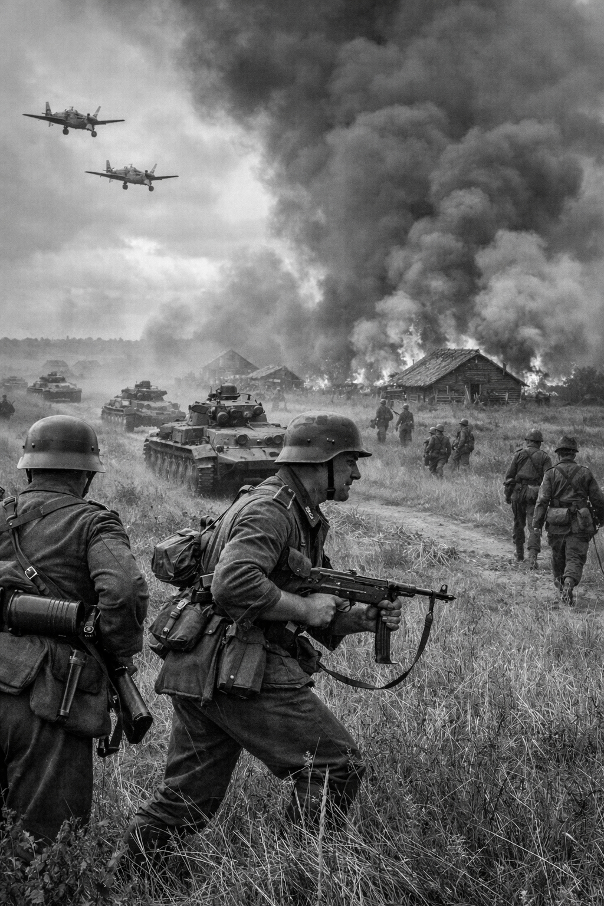

22 juin 1941 – hiver 1942
Front de l’Est – de la Baltique à la mer Noire
Axe : Allemagne, Finlande, Roumanie, Hongrie, Italie
Alliés : Union soviétique
L’opération Barbarossa est le nom de code de l’invasion de l’Union soviétique par l’Allemagne nazie. Lancée le 22 juin 1941, elle mobilise plus de trois millions de soldats allemands et marque le début du front de l’Est, le plus vaste et le plus meurtrier de la Seconde Guerre mondiale.
Les forces allemandes avancent rapidement, capturant Minsk, Smolensk et Kiev. Mais la résistance soviétique s’intensifie, et l’hiver russe, combiné à la logistique défaillante, stoppe l’offensive devant Moscou. Les pertes sont colossales des deux côtés.
Échec stratégique pour l’Allemagne. L’Armée rouge survit et contre-attaque. Le front de l’Est devient le théâtre principal du conflit jusqu’en 1945.
Barbarossa ouvre une guerre d’anéantissement idéologique entre nazisme et communisme. Elle scelle le destin du Troisième Reich en provoquant un conflit qu’il ne pouvait soutenir.